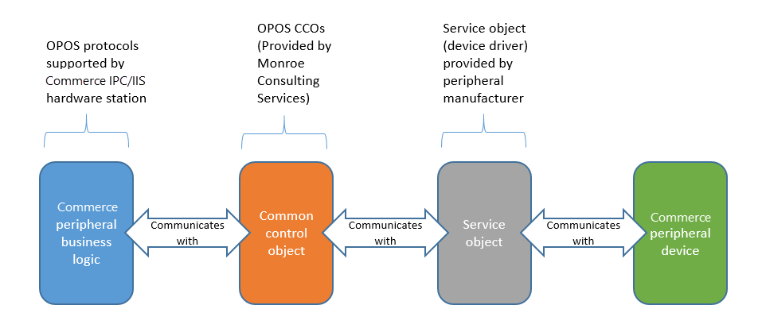

Peripheriegeräte
Important
Dynamics 365 Retail ist jetzt Dynamics 365 Commerce und bietet umfassende Handelsfunktionen für alle Kanäle – von E-Commerce über Shops bis hin zu Callcentern. Weitere Informationen zu diesen Änderungen finden Sie unter Microsoft Dynamics 365 Commerce.
In diesem Thema werden die Konzepte erläutert, die sich auf Speicherperipheriegeräte beziehen. Es werden die verschiedenen Arten Peripheriegeräte beschrieben, die mit der Verkaufsstelle (POS) verbunden werden können und die Komponenten, die für das Verwalten der Verbindung mit dem POS zuständig sind.
Konzepte
POS-Register
Navigieren: Klicken Sie auf Retail und Commerce > Kanaleinstellungen > POS-Einstellungen > Register. Das POS-Register ist eine Entität, die verwendet wird, um die Merkmale einer bestimmten Instanz des POS zu definieren. Diese umfassen das Hardwareprofil bzw. die Einrichtung für Peripheriegeräte, die für das Register verwendet werden, die Filiale, der das Register zugeordnet ist, und die Sichterfahrung für den Benutzer, der sich an dem Register anmeldet.
Geräte
Navigieren: Klicken Sie auf Retail und Commerce > Kanaleinstellungen > POS-Einstellungen > Geräte. Ein Gerät ist eine Entität, die eine physische Instanz eines Gerätes darstellt, das dem POS-Register zugeordnet ist. Wenn ein Gerät eingerichtet wird, wird es einem POS-Register zugeordnet. Die Geräteentität verfolgt Informationen darüber, ob ein POS-Register aktiviert ist, welcher Client verwendet wird und das Anwendungspaket, das für ein bestimmtes Gerät bereitgestellt wurde.
Geräte können zu folgenden Anwendungsarten zugeordnet werden: Retail Modern POS, Retail Cloud POS, Retail Modern POS, Windows Phone, Retail Modern POS – Android und Retail Modern POS – IOS
Modernes POS
Modern POS ist das POS-Programm für Microsoft Windows. Es kann auf Windows 10-Betriebssystemen bereitgestellt werden.
Cloud POS
Cloud POS ist eine browserbasierte Version des Modern POS-Programms, das in einem Webbrowser zugegriffen werden kann.
Modern POS für iOS
Modern POS für iOS ist eine iOS-basierte Version des Modern POS-Programms, das auf iOS-Geräten bereitgestellt werden kann.
Modern POS für Android
Modern POS für Android ist eine Android-basierte Version des Modern POS-Programms, das auf Android-Geräten bereitgestellt werden kann.
POS-Peripheriegeräte
POS-Peripheriegeräte sidn Geräte, die für POS-Funktionen explizit unterstützt werden. Diese Peripheriegeräte werden in der Regel in bestimmten Klassen aufgeteilt. Weitere Informationen über diese Klassen finden Sie im Abschnitt „Geräteklassen“ dieses Themas.
Hardware Station
Navigation: Klicken Sie auf Retail and Commerce > Kanäle > Filialen > Alle Filialen. Wählen Sie einen Shop aus, und klicken Sie anschließend auf die Registerkarte Hardwarestationen. Die Einstellung Hardware-Station ist eine Einstellung auf Kanalebene, die zur Definition von Instanzen verwendet wird, in denen die Peripherielogik eingesetzt wird. Diese Einstellung auf der Kanalebene wird verwendet, um die Merkmale der Hardwarestation zu bestimmen. Sie wird außerdem zum Auflisten von Hardwarestationen verwendet, die für eine Modern POS-Instanz eine moderne in einem bestimmten Shop verfügbar sind. Die Hardwarestation ist in die Modern POS-Programme für Windows und Android integriert. Die Hardwarestation kann auch unabhängig bereitgestellt werden als ein eigenständiges Microsoft-Internetinformationsdienste-Programm (IIS). In diesem Fall können Sie über ein Netzwerk zugreifen.
Hardwareprofil
Navigation: Klicken Sie auf Retail und Commerce > Kanaleinrichtung > POS-Einrichtung > POS-Profile > Hardwareprofile. Das Hardwareprofil identifiziert die Geräte, die für eine POS-Register oder einer Hardwarestation konfiguriert sind. Das Hardwareprofile kann direkt zu einer POS-Register oder einer Hardwarestation zugewiesen werden.
Geräteklassen
POS-Peripheriegeräte werden in der Regel in Klassen aufgeteilt. Dieser Abschnitt beschreibt und gibt einen Überblick der Geräte, die Modern POS unterstützt.
Drucker
Drucker umfassen traditionelle POS-Bondrucker und ganzseiten Drucker. Drucker werden über Object Linking and Embedding für Retail POS (OPOS) und Microsoft Windows-Treiberschnittstellen unterstützt. Bis zu zwei Drucker können gleichzeitig verwendet werden. Diese Funktion unterstützt Szenarien, in denen die Barbelege von Kunden auf Bondruckern gedruckt werden, und in den Kundenaufträge, die mehr Informationen enthalten, über einen ganzseiten Drucker gedruckt werden. Bondrucker können direkt mit einem Computer per USB verbunden werden, per Ethernet über ein Netzwerk verbunden werden, oder per Bluetooth verbunden werden.
Scanner
Bis zu zwei Barcodescanner können gleichzeitig verwendet werden. Diese Funktion unterstützt Szenarien, in denen ein Scanner, der mobiler ist, erforderlich ist, um die sehr schwere Artikel zu scannen, oder ein fester eingebetteter Scanner für die meisten Standard-skalierten Artikel verwendet wird, um die Auscheckenzeiten zu beschleunigen. Scanner können über OPOS, Universal Windows Platform (UWP) oder Tastatur-Wedge-Schnittstellen unterstützt werden. USB oder Bluetooth können verwendet werden, um eine Scanner-Verbindung mit einem Computer herstellen.
MSR
Ein USB-Magnetstreifenleser (MSR) kann über OPOS-Treiber eingerichtet werden. Wenn Sie ein eigenständiges MSR für Zahlungsbuchungen für elektronische Überweisungen verwenden möchten, muss einen MSR (Magnetstreifenleser) durch einen Zahlungskonnektor verwaltet werden. Ein eigenständiger MSR kann für einen Kundentreueeintrag, Mitarbeiteranmeldung und Geschenkkarteeintrag verwendet werden – unabhängig vom Zahlungskonnektor.
Kassenlade
Zwei Kassenladen können pro Hardwareprofil unterstützt werden. Diese Funktion ermöglicht zwei aktive Schichten pro Register, die verfügbar ist gleichzeitig. Im Falle einer gemeinsamen Schicht oder einer Kassenlade, die durch mehrere Geräte des mobilen POS gleichzeitig verwendet wird, ist nur eine Kassenlade pro Hardwareprofil zulässig. Kassenladen können direkt mit einem Computer per USB verbunden werden, über ein Netzwerk verbunden werden, oder per RJ12-Schnittstelle mit einem Bondrucker verbunden werden. In einigen Fällen können Kassenladen auch per Bluetooth verbunden werden.
Zeilenanzeige
Zeilendisplays werden zur Anzeige von Produkten, Buchungssaldos und andere Informationen während einer Transaktion verwendet. Ein Zeilendisplay kann an den Computer per USB über OPOS-Treiber verbunden werden.
Signaturerfassung
Unterschriftenaufnahmegeräte können direkt mit einem Computer per USB über den OPOS-Treiber verbunden verwendet. Wenn die Unterschriftaufnahme konfiguriert ist, wird der Kunde aufgefordert, um über das Gerät zu unterschreiben. Nachdem die Unterschrift bereitgestellt wird, wird sie dem Kassierer zur Abnahme dargestellt.
Skalieren
Eine Waage kann an den Computer per USP über OPOS-Treiber verbunden werden. Wenn ein Produkt, das als „gewogenes“ Produkt markiert wird, einer Transaktion hinzugefügt wird, erfasst das POS das Gewicht von der Waage, fügt das Produkt der Transaktion hinzu und verwendet die Menge der Waage.
PIN-Feld
Geheimzahl (PIN)-Pads werden über OPOS unterstützt, müssen aber zu über ein Zahlungskonnektor verwaltet werden.
Sekundäre Anzeige
Wenn eine sekundäre Anzeige wird konfiguriert, wird die zweite Windows-Anzeige verwendet, um grundlegende Informationen anzuzeigen. Der Sinn der sekundären Anzeige ist, unabhängige ISV-Erweiterungen zu unterstützen, der sekundäre Display ist nicht konfigurierbar und kann begrenzten Inhalten anzeigen.
Zahlungsgerät
Der Zahlungsgerätensupport wird durch den Zahlungskonnektor implementiert. Zahlungsgeräte können eine oder mehrere der Funktionen ausführen, die über andere Einheitenklassen bereitgestellt werden. So kann ein Zahlungsgerät als MSR-/Kartenleser, Zeilendisplay, oder Gerät für elektronische Unterschriften oder PIN-Pad arbeiten. Unterstützung für Zahlungsgeräte wird unabhängig des eigenständigen Gerätensupports implementiert, der für andere Geräte zulässig ist, die im Hardwareprofil enthalten sind.
Unterstützte Schnittstellen
OPOS
Um zu gewährleisten, dass die größte Bandbreite an Geräten mit Commerce verwendet werden kann, ist der Industriestandard OLE für POS die primäre unterstützte Peripheriegeräteplattform. Der OLE for POS-Standard wurde von der National Retail Federation (NRF) erstellt, die Industriestandard-Kommunikationsprotokolle für Peripheriegeräte festlegt. OPOS ist eine weithin anerkannte Implementierung des OLE für POS-Standards. Es wurde Mitte der 1990er entwickeltes und wurde mehrmals und aktualisiert. OPOS enthält eine Gerätetreiberarchitektur, die eine einfache Integration von POS-Hardware mit Windows-basierten POS-Systemen ermöglicht. OPOS steuert die Kommunikation zwischen kompatibler Hardware und der POS-Software. Ein OPOS-Steuerelement besteht aus zwei Teilen:
- Steuerelementobjekt – Das Steuerelementobjekt für eine Einheitenklasse (z.B. Gerätenamen) stellt die Schnittstelle zum Softwareprogramm bereit. Monroe Consulting Services (www.monroecs.com) bietet einen Satz OPOS-Steuerobjekte, die Common Control Objects (CCOs) heißen. Mit den CCOs wird die POS-Komponente von Commerce getestet. Wenn Commerce eine Geräteklasse über OPOS unterstützt, wird mit den Tests sichergestellt, dass viele Gerätetypen unterstützt werden, vorausgesetzt, dass der Hersteller ein Serviceobjekt bereitstellt, das für OPOS entwickelt wurde. Sie müssen jeden Einheitentyp nicht explizit testen.
- Serviceobjekt – Das Serviceobjekt bietet die Kommunikation zwischen dem Steuerobjekt (CCO) und dem Gerät. Normalerweise wird das Serviceobjekt für ein Gerät von dem Gerätenhersteller bereitgestellt. In bestimmten Fällen müssen Sie jedoch möglicherweise das Serviceobjekt von der Website des Herstellers herunterladen. Beispielsweise kann ein neueres Serviceobjekt verfügbar sein. Um die Adresse der Website des Herstellers suchen, prüfen Sie die Hardwaredokumentation.
 Unterstützung für die OPOS-Implementierung von OLE für POS gewährleistet Folgendes: Wenn die Gerätehersteller und POS-Herausgeber den Standard korrekt implementieren, können POS-Systeme und unterstützte Geräte zusammenarbeiten, auch wenn sie zuvor nicht zusammen getestet wurden.
{kind=link}
Note
OPOS-Support wird sichergestellt für alle Geräte, die OPOS-Treiber haben. Der Handel muss diesen Gerätetyp bzw. diese Geräteklasse zunächst über OPOS unterstützen. Darüber hinaus können ggf. Serviceobjekte nicht unbedingt mit der aktuellen Version des CCOs auf dem aktuellen Stand befindet. Sie sollten sich bewusst sein, dass sich im Allgemeinen die Servicequalitätsobjekte unterscheidet.
Windows
Bondruck am POS sind für OPOS optimiert. OPOS neigt zum schnelleren Drucken über Windows. Daher ist es eine gute Idee, OPOS zu verwenden, insbesondere in Umgebungen, in denen 40-Spalten-Belege gedruckt werden und die Transaktionszeiten schnell sein müssen. Für die meisten Geräte verwenden Sie OPOS-Steuerelemente. Allerdings unterstützen mehrere OPOS-Bondrucker auch Windows-Treiber. Mithilfe eines Windows-Treibers können Sie die neuesten Schriftarten und den Drucker im Netzwerk für mehrere Registern unterstützen. Allerdings besteht Nachteile bei der Verwendung von Windows-Treibern. Beispiele für Nachteile:
- Wenn Windows-Treiber verwendet werden, werden Bilder gerendert bevor das Drucken auftritt. Daher neigt das Drucken dazu langsamer zu werden als bei Druckern mit OPOS-Steuerung.
- Geräte, die mit dem Drucker verbunden sind („Daisy-Chained“) funktionieren möglicherweise nicht korrekt, wenn Windows-Treiber verwendet werden. Beispielsweise kann die Kassenlade vielleicht nicht geöffnet werden, oder der Registernbelegdrucker arbeitet nicht wie erwartet.
- OPOS unterstützt auch einen umfangreicheren Satz von Variablen, die spezifisch für Quittungsdrucker sind, wie z.B. das Ausschneiden von Papier oder das Drucken von Belegen.
- Windows-Drucker werden nicht von der IIS-Hardwarestation unterstützt.
Wenn OPOS-Steuerungen für Windows-Drucker verfügbar sind, sollte der Drucker trotzdem korrekt mit Commerce funktionieren.
Universal Windows Platform
UWP steht im Falle von Peripheriegeräten in Zusammenhang mit der Windows-Unterstützung für Plug-and-Play-Geräte. Wenn ein Plug&Play-Gerät an eine Windows-Betriebssystemversion verbunden ist, in der diese Art des Geräts unterstützt, ist kein Treiber erforderlich, damit das Gerät verwendet werden kann. Wenn beispielsweise Windows ein Bluetooth-Lautsprechergerät erkennt weiß das Betriebssystem das Gerät, dass den Klassentyp Lautsprecher hat. Daher behandelt es dieses Gerät es als Lautsprecher. Es sind keine zusätzlichen Einrichtung erforderlich. Im Falle von POS-Geräten können viele USB-Geräte verbunden werden, und Windows werden sie als Eingabegeräte (HIDs) erkannt. Allerdings ist es möglicherweise nicht in der Lage, die Funktion auf bestimmen Geräten zu erkennen, da das Gerät nicht die Klasse oder den Typ angibt. In Windows 10 sind Einheitenklassen für Strichcodescanner MSR und hinzugefügt. Wenn ein Gerät unter Windows 10 sich als Gerät aus einer der Klassen deklariert, hört Windows auf Ereignisse vom Gerät zu den entsprechenden Uhrzeiten. Modern POS unterstützt UWP MSR und Scanner. Wenn die Eingabe über dieser Geräte bereit ist, und ein RFID-Gerät, das zu einer der Klassen gehört vrbunden ist, kann das Gerät verwendet werden. Wenn beispielsweise ein UWP-Barcodescanner in einem Windows 10-Computer eingesteckt wird, und Strichcodeanmeldung für Modern POS konfiguriert ist, wird Strichcodescanner aktiv im Feld Anmeldungsbildschirm. Es sind keine zusätzlichen Einrichtung erforderlich. Zusätzliche Klassen von Geräten für UWP werden Windows hinzugefügt werden. Diese Klassen beinhalten Klassen für Kassenladen und Bondrucker. Unterstützung für diese neuen Einheitenklassen für Modern POS ist aussteht.
Tastaturweiche
Tastaturweichengeräte senden Daten auf den Computer, als ob diese Daten auf der Tastatur eingegeben wurden. Somit erhält standardmäßig das Feld, das am POS aktiv ist, die Daten, die eingelesen werden. In einigen Fällen kann dieses Verhalten zum falschen Typ der Daten führen, die in das falsche Feld gescannt werden. Beispielsweise könnte ein Strichcode in ein Feld eingefügt werden, das sich möglicherweise auf Kreditkartendaten bezieht. In vielen Fällen legt die Logik am POS fest, ob die gescannten Daten ein Strichcode oder ein Kartendaten sind. Daher werden die Daten korrekt bearbeitet. Wenn Geräte jedoch als OPOS anstelle von Tastaturweichengeräten eingerichtet werden, gibt es mehr Kontrolle darüber, wie die Daten von diesen Geräten verwendet werden können, da mehr über das Gerät „bekannt“ ist, von dem die Daten stammen. Beispielsweise werden Daten von einem Strichcodescanner automatisch als Strichcode erkannt, und der entsprechende Datensatz in der Datenbank ist einfach und schneller als, wenn eine generische Suche nach einer Zeichenfolge verwendet wurden, z.B. im Falle der Tastaturweichen.
Systemeigener Drucker
Systemeigene Drucker (bzw. Gerätedrucker im Hardwareprofil) können konfiguriert werden, um den Benutzer aufzufordern, einen Drucker auszuwählen, der für den Computer konfiguriert ist. Wenn ein Gerät Drucker wird konfiguriert, wenn Modern POS einen Drucktbefehl erkennen, wird der Benutzer aufgefordert, einen Drucker in einer Liste auswählen. Dieses Verhalten unterscheidet sich insofern vom Verhalten für Windows-Treiber, da der Windows Drucker im Feld Hardwareprofil keine Liste von Druckern enthält. Stattdessen es erforderlich, dass ein benannter Drucker im Gerätename Feld angegeben wird.
Netzwerk
Netzwerk-Kassenladen, -Bondrucker und -Zahlungsterminals können über ein Netzwerk verwendet werden, entweder direkt über die Hardwarestation die prozessübergreifenden Kommunikationen (Interprocess Communications, IPK), der in die Modern POS für Windows-Anwendung integriert ist oder von der IIS-Hardwarestation für andere Modern POS-Clients erstellt wird.
Hardware Station-Bereitstellungsoptionen
Dediziert
Moderne POS-Clients für Windows und Android umfassen dedizierte oder eingebaute Hardwarestationen. Diese Clients können mithilfe der in die Anwendungen integrierten Geschäftslogik direkt mit Peripheriegeräten kommunizieren. Die Android-Anwendung unterstützt nur Netzwerkgeräte. Weitere Informationen über die Unterstützung von Peripheriegeräten für die Android finden Sie im Artikel POS-Hybridanwendung einrichten auf Android und iOS.
Um die dedizierte Hardwarestation zu verwenden, weisen Sie einem Register ein Hardwareprofil zu, das Modern POS für Windows- oder Android-Anwendungen nutzt. Erstellen Sie dann eine Hardwarestation vom Typ Dediziert für den Shop, in dem die Register verwendet wird. Starten Sie den Modern POS im kassenladenfremden Modus und verwenden Sie den Vorgang Hardwarestationen verwalten, um die Hardwarestationsfunktionen einzuschalten; die dedizierte Hardwarestation ist standardmäßig aktiv. Melden Sie sich als Nächstes vom Modern POS ab, melden Sie sich dann wieder an und öffnen Sie eine Schicht. Die im Hardwareprofil konfigurierten Peripheriegeräte können verwendet werden.
Geteilt
IIS, manchmal auch als IIS-Hardwarestation bezeichnet, bedeutet, dass die POS-Anwendung über Microsoft Internet Information Services eine Verbindung zur Hardwarestation herstellt. Die POS-Anwendung verbindet sich mit der IIS-Hardwarestation über Webdienste, die auf einem Computer ausgeführt werden, mit dem die Geräte verbunden werden. Wenn die gemeinsam genutzte Hardware-Station verwendet wird, können die Peripheriegeräte, die an eine Hardware-Station angeschlossen sind, von jeder POS-Kasse verwendet werden, die sich im selben Netzwerk wie die IIS-Hardware-Station befindet. Da nur Modern POS for Windows und Android eine integrierte Unterstützung für Peripheriegeräte enthalten, müssen alle anderen Modern POS-Anwendungen die IIS-Hardware-Station zur Kommunikation mit den im Hardwareprofil konfigurierten POS-Peripheriegeräten verwenden. Deshalb muss jede Instanz der IIS-Hardwarestation einen Computer haben, der den Webdienst und die Anwendung ausführen.
Mit der freigegebenen Hardwarestation können mehrere POS-Clients Peripheriegeräte gemeinsam nutzen, oder es kann damit ein festgeschriebenes Set oder Peripheriegeräte für einen einzelnen POS verwaltet werden.
Wenn eine Hardwarestation für die gemeinsame Nutzung von Peripheriegeräten zwischen mehreren POS-Clients genutzt wird, sollten nur Kassenladen, Belegdrucker und Zahlungsterminals verwendet werden. Sie können Strichcodescanner, MSRs, Zeilendisplays, Skalen oder andere Geräte nicht direkt verbinden. Andernfalls treten Konflikte auf, wenn mehrere POS-Geräte versuchen, Peripheriegeräte gleichzeitig zu beanspruchen. So werden Konflikte für unterstützt Geräte verwaltet:
- Kassenlade – Die Kassenlade wird über ein Ereignis geöffnet, das dem Gerät gesendet wird. Der einzige Problem, die auftreten kann, wenn eine Kassenlade aufgerufen wird, findet statt, wenn die Kassenlade bereits geöffnet ist. Im Falle der freigegebenen Hardwarestationen soll die Kassenlade auf Freigegeben im Hardwareprofil festgelegt werden. Diese Einstellung verhindert, dass der POS prüft, ob bereits die Kassenlade geöffnet ist, wenn sie offene Befehle übermittelt.
- Bondrucker - Wenn zwei Bondruckerbefehle der Hardwarestation gleichzeitig gesendet werden, kann einer der Befehle, je nach Gerät, verloren gehen. Einige Geräte haben internen Speicherpool, der dieses Problem verhindern können. Wenn ein Druckbefehl nicht erfolgreich ist, erhält der Kassierer eine Fehlermeldung und kann den Druckbefehl vom POS erneut versuchen.
- Zahlungsterminal – Wenn ein Kassierer eine Buchung an einem Zahlungsterminal versucht, das bereits verwendet wird, informiert eine Meldung den Kassierer, dass das Terminal verwendet wird und fordert den Kassierer, noch einmal später vorgenommen werden können. Normalerweise können Kassierer sehen, dass ein Terminal bereits verwendet wird und warten, bis die andere Buchung abgeschlossen ist, bevor sie Zahlungsmittel noch einmal ausgeführt.
Für eine zukünftige Version ist eine Prüfung geplant, um zu ermitteln, ob nicht unterstützte Geräte für ein Hardwareprofil eingerichtet sind, die auf eine freigegebene Hardwarestation zugeordnet ist. Werden nicht unterstützt Geräte erkannt werden, erhält der Benutzer einer Meldung, durch die angegeben wird, dass die freigegebene Hardwarestationen Geräte nicht unterstützt werden. Im Falle der freigegebenen Hardwarestationen ist die Option Bei Angebot auswählen auf Registernebene auf Ja festgelegt. Der POS-Benutzer wird aufgefordert, eine Hardwarestation auszuwählen, wenn ein Zahlungsmittel für eine Buchung am POS aktiviert ist. Wenn die Hardwarestation nur zum Zeitpunkt der Zahlungsmittel ausgewählt wird, wird die Hardwarestationsauswahl direkt an den POS-Workflow für mobile Szenarios hinzugefügt. Als zusätzliche Vorteil wird das Zeilendisplay im Feld Zahlungsterminal nicht für freigegebene Szenarien verwendet. Wenn das Zahlungsterminal als Zeilendisplay verwendet wird, können andere Benutzer für dieses Terminals gesperrt werden, bis die Buchung abgeschlossen ist. In mobilen Szenarien werden möglicherweise Positionen an einer Buchung für einen längeren Zeitraum hinzugefügt. Daher ist die Option Bei Angebot wählen obligatorisch, um eine optimale Gerätenverfügbarkeit sicherzustellen.
Netzwerkperipheriegeräte
Die Netzwerkbezeichnung für Geräte im Hardwareprofil sorgt dafür, das Kassenladen, Bondrucker und Zahlungsterminals per Netzwerkverbindung verbunden werden können.
Modern POS für Windows
Sie können IP-Adressen für Netzwerkperipheriegeräte in zwei Stellen angeben. Wenn der Modern POS Windows-Client einen individuellen Satz Netzwerkperipheriegeräte verwendet, sollten Sie die IP-Adressen diese für Geräte festlegen, indem Sie die IP-Konfiguration Option im Aktivitätsbereich für die Register verwenden. Bei der Netzwerkgeräten, die unter POS-Registern freigegeben werden, kann ein Hardwareprofil, dem Netzwerkgeräte zugewiesen werden, direkt auf eine freigegebene Hardwarestation zugeordnet werden. Um IP-Adressen zuzuweisen, wählen Sie die Hardwarestation auf der Seite Filialen aus. Verwenden Sie dann die Option IP-Konfiguration im Abschnitt Hardwarestationen, um die Netzwerkgeräte anzugeben, die dieser Hardwarestation zugewiesen werden. Für Hardwarestationen, die nur Netzwerkgeräte haben, müssen Sie die Hardwarestation selbst nicht bereitstellen. In diesem Fall ist die Hardware-Station nur erforderlich, um netzwerkadressierbare Geräte konzeptionell nach ihrem Standort in der Filiale zu gruppieren.
Cloud POS und Modern POS für iOS
Die Logik für physisch verbundene und über das Netzwerk-adressierbaren Peripheriegeräte ist in der Hardwarestation enthalten. Daher muss für alle POS-Clients außer Modern POS für Windows und Android eine IIS-Hardwarestation bereitgestellt und aktiv sein, damit der POS mit Peripheriegeräten kommunizieren kann, unabhängig davon, ob diese Peripheriegeräte physisch mit einer Hardwarestation verbunden sind oder die Kommunikation über das Netzwerk verläuft.
Einrichtung und Konfiguration
Installation der Hardwarestation
Weitere Informationen finden Sie unter Konfigurieren und Installieren einer Hardwarestation (This is an external link).
Modern POS für Windows-Einstellung und -Konfiguration
Weitere Informationen finden Sie unter Konfigurieren, Installieren und Aktivieren von Modern POS (MPOS) (This is an external link).
Modern POS für Android und iOS – Einrichtung und Konfiguration
Weitere Informationen finden Sie unter POS-Hybridanwendung auf Android und iOS einrichten.
OPOS-Geräte Einrichtung und Konfiguration
Weitere Informationen zu OPOS-Komponenten, finden Sie unter "Unterstützte Schnittstellen" dieses Dokuments. Normalerweise werden OPOS-Treiber vom Gerätenhersteller bereitgestellt. Wenn ein OPOS-Gerätetreiber eingerichtet wird, fügt er der Windows-Registrierung einem Schlüssel an einem der folgenden Orte hinzu:
- 32-Bit-System: HKEY_LOCAL_MACHINESOFTWAREOLEforRetailServiceOPOS
- 64-Bit-System: HKEY_LOCAL_MACHINESOFTWAREWOW6432NodeOLEforRetailServiceOPOS
Innerhalb des ServiceOPOS-Registrierungsspeicherortes werden konfigurierte Geräte entsprechend der OPOS-Einheitenklasse sortiert. Mehrere Gerätetreiber werden gespeichert.
Unterstützte Szenarien nach Hardwarestationstyp
Client-Support - IPC-Hardwarestation vs. IIS-Hardwarestation
Die folgende Tabelle zeigt die Topologien und die Bereitstellungsszenarien an die, unterstützt werden.
| Kunde | IPC-Hardwarestation | IIS-Hardwarestation |
|---|---|---|
| Windows-App | Ja | Ja |
| Cloud POS | Nein | Ja |
| Android | Ja | Ja |
| iOS | Nein | Ja |
Netzwerkperipheriegeräte
Netzwerkperipheriegeräte können direkt über die Hardwarestation unterstützt werden, die in Modern POS für Windows- und Android-Anwendungen integriert ist. Bei allen anderen Clients müssen Sie eine IIS-Hardwarestation bereitstellen.
| Kunde | IPC-Hardwarestation | IIS-Hardwarestation |
|---|---|---|
| Windows-App | Ja | Ja |
| Cloud POS | Nein | Ja |
| Android | Ja | Ja |
| iOS | Nein | Ja |
Unterstützte Gerätetypen nach Hardwarestationstyp
Modern POS für Windows mit einer IPC-Hardwarestation (integriert)
| Unterstützte Einheitenklasse | Unterstützte Schnittstellen |
|---|---|
| Drucker |
|
| Drucker 2 |
|
| Zeilenanzeige | OPOS |
| Duale Anzeige | Windows-Treiber |
| MSR |
|
| Schublade |
|
| Schublade 2 |
|
| Scanner |
|
| Scanner 2 |
|
| Skalieren | OPOS |
| PIN-Feld | OPOS (Support wird mit Anpassung des Zahlungskonnektors bereigestellt). |
| Signaturerfassung | OPOS |
| Zahlungsterminal |
|
Alle Modern POS-Clients mit festgeschriebener freigegebener IIS-Hardwarestation
Note
Wenn die IIS-Hardware-Station „committed“ ist, besteht eine Eins-zu-Eins-Beziehung zwischen dem POS-Client und der Hardware-Station.
| Unterstützte Einheitenklasse | Unterstützte Schnittstellen |
|---|---|
| Drucker |
|
| Drucker 2 |
|
| Positionsanzeige | OPOS |
| MSR | OPOS |
| Schublade |
|
| Schublade 2 |
|
| Scanner | OPOS |
| Scanner 2 | OPOS |
| Skalieren | OPOS |
| PIN-Feld | OPOS (Support wird mit Anpassung des Zahlungskonnektors bereigestellt). |
| Sig. erfassen | OPOS |
| Zahlungsterminal |
|
Alle Modern POS-Clients mit freigegebener IIS-Hardwarestation
Note
Wenn die IIS-Hardware-Station „gemeinsam genutzt“ wird, können mehrere Geräte die Hardware-Station gleichzeitig verwenden. Für dieses Szenario sollten Sie nur die Geräte verwenden, die in der weiter unten dargestellten Tabelle. Wenn Sie versuchen Geräte freizugeben, die hier nicht aufgeführt sind, wie Strichcodescanner und MSR, treten Fehler auf, wenn mehrere Geräte versuchen, dasselbe Peripheriegerät zu beanspruchen. In der Zukunft wird eine solche Konfiguration explizit verhindert.
| Unterstützte Einheitenklasse | Unterstützte Schnittstellen |
|---|---|
| Drucker |
|
| Drucker 2 |
|
| Schublade |
|
| Schublade 2 |
|
| Zahlungsterminal |
|
Konfiguration für unterstützte Szenarien
Weitere Informationen dazu, wie Sie Hardwareprofile erstellt finden Sie unter Definieren und Verwalten von Kanal-Clients, einschließlich Registern und Hardwarestationen.
Modern POS für Windows mit einer IPC-Hardwarestation (integriert)
Diese Konfiguration ist die typischste Konfiguration für die traditionelle, feste POS-Registern. Für dieses Szenario werden die Hardwareprofilinformationen direkt der Register selbst zugeordnet. Die EFT-Terminalnummer soll auf die Register selbst festgelegt werden. Führen Sie zum Eirnichten dieser Konfiguration die folgenden Schritte durch.
Erstellen eines Hardwareprofils, bei dem alle erforderlichen Peripheriegeräte konfiguriert werden.
Ordnen Sie den dem Hardwareprofil POS-Registern zu.
Erstellen Sie eine Hardware-Station vom Typ Dediziert für das Geschäft, in dem die POS-Kasse verwendet werden soll. Die Beschreibung ist optional.
Note
Sie müssen keine anderen Eigenschaften auf der Hardwarestation festlegen. Alle anderen Informationen, z.B. das Hardwareprofil, kommt von der Register selbst.
Klicken Sie auf Retail and Commerce > Retail and Commerce IT > Verteilungsplan.
Wählen Sie den Verteilungszeitplan 1090 aus, um das neue Hardwareprofil zu synchronisieren. Klicken Sie auf Jetzt ausführen, um die Änderungen am POS zu synchronisieren.
Wählen Sie den Verteilungszeitplan 1040 aus, um die neue Hardwarestation zu synchronisieren. Klicken Sie auf Jetzt ausführen, um die Änderungen am POS zu synchronisieren.
Installieren und aktivieren von Modern POS für Windows.
Starten Sie Modern POS für Windows, und starten Sie die zugeordneten Peripheriegeräte zu verwenden.
Modern POS für Android mit einer IPC-Hardwarestation (integriert)
Neu für 10.0.8 – Epson-Netzwerkdrucker und Kassenladen, die über den DK-Port mit diesen Druckern verbunden sind, werden jetzt für die Modern POS für Android-App unterstützt. Einzelheiten finden Sie im Artikel POS-Hybridanwendung einrichten auf Android und iOS.
Alle Modern POS-Clients mit festgeschriebener freigegebener IIS-Hardwarestation
Diese Konfiguration kann für alle Modern POS-Clients verwendet werden, die eine Hardwarestation hat, die ausschließlich durch eine POS-Register verwendet wird. Führen Sie zum Eirnichten dieser Konfiguration die folgenden Schritte durch.
Erstellen eines Hardwareprofils, bei dem alle erforderlichen Peripheriegeräte konfiguriert werden.
Erstellen Sie eine Hardware-Station vom Typ Dediziert für das Geschäft, in dem die POS-Kasse verwendet werden soll.
Auf dedizierten Hardwarestationen legen Sie die folgenden Eigenschaften fest:
Hostname – Der Name des Hostcomputers, wo die Hardwarestation ausgeführt wird.
Note
Cloud POS kann localhost für den lokalen Computer auflösen, um zu bestimmen, wo Cloud POS ausgeführt wird. Das Zertifikat für das koppeln von Cloud POS mit der Hardwarestation muss jedoch auch "Localhost" als Computernamen nutzen. Um Probleme zu vermeiden, sollten Sie eine Liste aller Instanzen jeder dedizierten Hardwarestation für den Shop führen. Für jede Hardwarestation sollte der Hostname der Computernamen sein, für den die Hardwarestation bereitgestellt wird.
Port – Der Port, der verwendet wird, damit die Hardwarestation mit dem Modern POS-Client kommunizieren kann.
Hardwareprofil – Wenn das Hardwareprofil nicht auf der Hardwarestation selbst angegeben ist, wird das Hardwareprofil, das der Register zugewiesen ist, verwendet.
EFT POS-Nummer – Die EFT-Terminal-ID, das verwendet werden soll, wenn EFT-Autorisierungen übermittelt werden. Diese Kennung wird von der Kreditkartenverarbeitungsstelle bereitgestellt.
Paketname – Das Hardwarestationspaket, das verwendet werden soll, wenn die Hardwarestation bereitgestellt wird.
Klicken Sie auf Retail and Commerce > Retail and Commerce IT > Verteilungsplan.
Wählen Sie den Verteilungszeitplan 1090 aus, um das neue Hardwareprofil zu synchronisieren. Klicken Sie auf Jetzt ausführen, um die Änderungen am POS zu synchronisieren.
Wählen Sie den Verteilungszeitplan 1040 aus, um die neue Hardwarestation zu synchronisieren. Klicken Sie auf Jetzt ausführen, um die Änderungen am POS zu synchronisieren.
Installation der Hardwarestation Weitere Informationen zur Installation der Hardware-Station finden Sie unter Konfiguration und Installation der Retail-Hardware-Station (This is an external link).
Installieren und aktivieren von Modern POS Weitere Informationen über die Installation von Modern POS finden Sie unter Konfiguration, Installation und Aktivierung von Modern POS (MPOS) (This is an external link).
Melden Sie sich bei Modern POS, und wählen Sie aus Ausführen von Vorgängen ohne Kassenlade.
Starten Sie den Hardwarestationen verwalten Arbeitsgang.
Klicken Sie auf Verwalten.
Auf der Hardwarestationsverwaltungsseite legen Sie die Option fest, um die Hardwarestation zu aktivieren.
Wählen Sie die Hardwarestation aus, der verwendet werden soll, und klicken Sie dann auf Koppeln.
Nachdem die Hardwarestation zugeordnet ist, klicken Sie auf Schließen.
Auf der Hardwaresenderauswahlseite klicken Sie auf die Hardwarestation die sie gerade ausgewählte haben, um diese zu aktivieren.
Alle Modern POS-Clients, die eine freigegebene IIS-Hardwarestation haben
Diese Konfiguration kann für alle Modern POS-Clients verwendet werden, die die Hardwarestationen mit anderen Geräten teilen. Führen Sie zum Eirnichten dieser Konfiguration die folgenden Schritte durch.
Erstellen eines Hardwareprofils, bei dem die erforderlichen Peripheriegeräte konfiguriert werden.
Erstellen Sie eine Hardware-Station vom Typ Shared für das Geschäft, in dem die POS-Kasse verwendet werden soll.
Auf freigegebenen Hardwarestationen legen Sie die folgenden Eigenschaften fest:
- Hostname – Der Name des Hostcomputers, wo die Hardwarestation ausgeführt wird.
- Beschreibung – Text, der die Erkennung der Hardwarestation unterstützt (z. B. Rücklieferungen oder Vorne im Laden).
- Port – Der Port, der verwendet wird, damit die Hardwarestation mit dem Modern POS-Client kommunizieren kann.
- Hardwareprofil – Für freigegebene Hardwarestationen, jede Hardwarestation soll ein Hardwareprofil eingerichtet haben. Hardwareprofile können unter Hardwarestationen freigegeben werden, jedoch müssen sie jeder Hardwarestation zugeordnet werden. Außerdem wird empfohlen, dass sie freigegebenen Schichten verwendet, wenn mehrere Geräte gleiche freigegebene Hardwarestation verwenden. Um eine freigegebene Schicht einzurichten, klicken Sie auf Retail und Commerce > Kanaleinrichtung > POS-Einrichtung > POS-Profile > Hardwareprofile. Für jedes freigegebene Hardwareprofil wählen Sie die Kassenlade aus und legen Sie die Schichtkassenlade Option auf Ja.
- EFT POS-Nummer – Die EFT-Terminal-ID, das verwendet werden soll, wenn EFT-Autorisierungen übermittelt werden. Diese Kennung wird von der Kreditkartenverarbeitungsstelle bereitgestellt.
- Paketname – Das Hardwarestationspaket, das verwendet werden soll, wenn die Hardwarestation bereitgestellt wird.
Wiederholen Sie die Schritte 2 und 3 für jede zweite Hardwarestation im Shop.
Klicken Sie auf Retail and Commerce > Retail and Commerce IT > Verteilungsplan.
Wählen Sie den Verteilungszeitplan 1090 aus, um das neue Hardwareprofil zu synchronisieren. Klicken Sie auf Jetzt ausführen, um die Änderungen am POS zu synchronisieren.
Wählen Sie den Verteilungszeitplan 1040 aus, um die neue Hardwarestation zu synchronisieren. Klicken Sie auf Jetzt ausführen, um die Änderungen am POS zu synchronisieren.
Installieren Sie die Hardwarestation auf jedem Hostcomputer, den Sie in Schritt 2. und 3 eingerichtet haben. Weitere Informationen zur Installation der Hardware-Station finden Sie unter Konfiguration und Installation der Retail-Hardware-Station (This is an external link).
Installieren und aktivieren von Modern POS Weitere Informationen über die Installation von Modern POS finden Sie unter Konfigurieren, Installieren und Aktivieren von Modern POS (MPOS) (This is an external link).
Melden Sie sich bei Modern POS, und wählen Sie aus Ausführen von Vorgängen ohne Kassenlade.
Starten Sie den Hardwarestationen verwalten Arbeitsgang.
Klicken Sie auf Verwalten.
Auf der Hardwarestationsverwaltungsseite legen Sie die Option fest, um die Hardwarestation zu aktivieren.
Wählen Sie die Hardwarestation aus, der verwendet werden soll, und klicken Sie dann auf Koppeln.
Wiederholen Sie Schritt 14 für jede Hardwarestation, die Modern POS verwendet.
Nachdem alle erforderlichen Hardwarestationen gekoppelt sind, klicken Sie auf Schließen.
Auf der Hardwaresenderauswahlseite klicken Sie auf die Hardwarestation die sie gerade ausgewählte haben, um diese zu aktivieren.
Note
Wenn Geräte oft unterschiedliche Hardwarestationen verwenden, empfiehlt es sich, Modern POS zu konfigurieren, um den Kassierer zur Auswahl einer Hardwarestation aufzufordern, wenn sie den Zahlungsmittelprozess starten. Klicken Sie auf Retail and Commerce > Kanal-Einrichtung > POS-Einrichtung > Registrierungen. Wählen Sie das Register aus, und legen Sie dann die Option Bei Angebot auswählen auf Ja fest. Verwenden Sie den Verteilungszeitplan 1090, um Änderungen an der Kanaldatenbank zu synchronisieren.
Erweiterbarkeit
Informationen zu Erweiterbarkeitsszenarien für die Hardwarestation finden Sie unter Hardwarestationserweiterbarkeit (This is an external link).
Sicherheit
Entsprechend aktuellen Sicherheitsstandards sollten die folgenden Einstellungen in einer Produktionsumgebung verwendet werden:
Hardware-Station-Installationsprogramm
Das Hardwarestationsinstallationsprogramm macht automatisch diese Eintragsanpassungen als Teil der Installation über Self-Service.
- Secure Sockets Layer (SSL) sollte deaktiviert werden.
- Nur Transport Layer Security (TLS)- Version 1.2 (oder die höchste aktuelle Version) sollte aktiviert und verwendet werden.
SSL und TLS
Standardmäßig sind SSL und alle Versionen von TLS außer TLS 1.2 deaktiviert. Um diese Werte zu bearbeiten oder zu aktivieren, gehen Sie folgendermaßen vor: 1. Drücken Sie Windows-Taste+R, um das Ausführen Fenster zu öffnen. 2. Geben Sie im Feld Öffnen Regedit ein und klicken Sie auf OK. 3. Wenn ein Benutzerkontensteuerung Meldungsfeld angezeigt wird, klicken Sie auf Ja. 4. Im Registrierungs-Editor Fenster navigieren Sie zu HKEY_LOCAL_MACHINESystemCurrentControlSetSecurityProvidersSCHANNELProtocols. Die folgenden Konfigurationsschlüssel werden automatisch eingegeben, um nur TLS 1.2 zuzulassen: - TLS 1.2Server:Enabled=1 - TLS 1.2Server:DisabledByDefault=0 - TLS 1.2Client:Enabled=1 - TLS 1.2Client:DisabledByDefault=0 - TLS 1.1Server:Enabled=0 - TLS 1.1Client:Enabled=0 - TLS 1.0Server:Enabled=0 - TLS 1.0Client:Enabled=0 - SSL 3.0Server:Enabled=0 - SSL 3.0Client:Enabled=0 - SSL 2.0Server:Enabled=0 - SSL 2.0Client:Enabled=0
- Keine zusätzlichen Netzwerkporte sollen offen sein, es sei denn, sie ist für dieses bekannte obligatorische Gründe erforderlich.
- Cross-Origin-Resource-Sharing muss deaktiviert werden und es müssen die zulässigen Ursprünge angeben werden.
- Nur vertrauenswürdige Zertifizierungsstellen dürfen verwendet werden, um Zertifikate für Computern mit Hardwarestation zu erstellen.
Note
Es ist sehr wichtig, dass Sie die Sicherheitsrichtlinien für IIS und die Anforderungen der Payment Card Industry (PCI) überprüfen.
Peripheriesimulator
Weitere Informationen finden Sie unter Peripheriesimulator für den Handel (This is an external link).
Von Microsoft getestete Peripheriegeräte
IPC-Hardwarestation (integriert)
Die folgenden Peripheriegeräte wurden getestet, indem die IPC-Hardwarestation verwendete wurde, die in Modern POS für Windows integriert ist.
Drucker
| Hersteller | Modell | Schnittstelle | Kommentare |
|---|---|---|---|
| Epson | Tm-T88IV | OPOS | |
| Epson | TM-T88V | OPOS | |
| Epson | TM-T88 | Benutzerdefiniert | Per Netzwerk verbunden |
| Star | TSP650II | Benutzerdefiniert | Per Netzwerk verbunden |
| Star | mPOP | OPOS | Angeschlossen per Bluetooth |
| HP | F7M67AA | OPOS | USB |
Strichcodescanner
| Hersteller | Modell | Schnittstelle | Kommentare |
|---|---|---|---|
| Motorola | DS9208 | OPOS | |
| Honeywell | 1900 | UWP | |
| Symbol | LS2208 | OPOS | |
| HP Integrated | E1L07AA | OPOS | |
| Datalogic | Magellan 8400 | OPOS |
PIN-Feld
| Hersteller | Modell | Schnittstelle | Kommentare |
|---|---|---|---|
| VeriFone | 1000SE | OPOS | Erfordert Anpassung des Zahlungskonnektors |
Zahlungsterminal
| Hersteller | Modell | Schnittstelle | Kommentare |
|---|---|---|---|
| Equinox | L5300 | Benutzerdefiniert | Erfordert Anpassung des Zahlungskonnektors |
| VeriFone | MX925 | Benutzerdefiniert | Erfordert Anpassung des Zahlungskonnektors; Netzwerk verbunden und USB |
| VeriFone | MX915 | Benutzerdefiniert | Erfordert Anpassung des Zahlungskonnektors; Netzwerk verbunden und USB |
Kassenlade
| Hersteller | Modell | Schnittstelle | Kommentare |
|---|---|---|---|
| Star | mPOP | OPOS | Angeschlossen per Bluetooth |
| APG | Atwood | Benutzerdefiniert | Per Netzwerk verbunden |
| Star | SMD2-1317 | OPOS | |
| HP | QT457AA | OPOS | |
| Epson | Benutzerdefiniert | Über DK-Port mit dem Netzwerk verbundener Epson-Drucker |
Positionsanzeige
| Hersteller | Modell | Schnittstelle | Kommentare |
|---|---|---|---|
| HP Integrated | G6U79AA | OPOS | |
| Epson | M58DC | OPOS |
Signaturerfassung
| Hersteller | Modell | Schnittstelle | Kommentare |
|---|---|---|---|
| Scriptel | ST1550 | OPOS |
Skalieren
| Hersteller | Modell | Schnittstelle | Kommentare |
|---|---|---|---|
| Datalogic | Magellan 8400 | OPOS |
MSR
| Hersteller | Modell | Schnittstelle | Kommentare |
|---|---|---|---|
| Magtek | 21073075 | UWP | |
| Magtek | 21073062 | OPOS | |
| HP | IDRA-334133 | OPOS |
Deditzierte IIS-Hardwarestation
Die folgenden Peripheriegeräte wurden getestet, indem eine dedizierte (nicht freigegebenen) IIS-Hardwarestation zusammen mit Modern POS für Windows und Cloud POS verwendet wurde.
Drucker
| Hersteller | Modell | Schnittstelle | Kommentare |
|---|---|---|---|
| Epson | Tm-T88IV | OPOS | |
| Epson | TM-T88V | OPOS | |
| Epson | TM-T88V | Benutzerdefiniert | Über Netzwerk verbunden |
| Star | TSP650II | Benutzerdefiniert | Per Netzwerk verbunden |
| HP | F7M67AA | OPOS | USB |
Strichcodescanner
| Hersteller | Modell | Schnittstelle | Kommentare |
|---|---|---|---|
| Motorola | DS9208 | OPOS | |
| Symbol | LS2208 | OPOS | |
| HP Integrated | E1L07AA | OPOS |
PIN-Feld
| Hersteller | Modell | Schnittstelle | Kommentare |
|---|---|---|---|
| VeriFone | 1000SE | OPOS | Erfordert Anpassung des Zahlungskonnektors |
Zahlungsterminal
| Hersteller | Modell | Schnittstelle | Kommentare |
|---|---|---|---|
| Equinox | L5300 | Benutzerdefiniert | Erfordert Anpassung des Zahlungskonnektors |
| VeriFone | MX925 | Benutzerdefiniert | Erfordert Anpassung des Zahlungskonnektors; Netzwerk verbunden und USB |
| VeriFone | MX915 | Benutzerdefiniert | Erfordert Anpassung des Zahlungskonnektors; Netzwerk verbunden und USB |
Kassenlade
| Hersteller | Modell | Schnittstelle | Kommentare |
|---|---|---|---|
| APG | Atwood | Benutzerdefiniert | Per Netzwerk verbunden |
| Star | SMD2-1317 | OPOS | |
| HP | QT457AA | OPOS | |
| Epson | Benutzerdefiniert | Über DK-Port mit dem Netzwerk verbundener Epson-Drucker |
Positionsanzeige
| Hersteller | Modell | Schnittstelle | Kommentare |
|---|---|---|---|
| HP Integrated | G6U79AA | OPOS | |
| Epson | M58DC | OPOS |
Signaturerfassung
| Hersteller | Modell | Schnittstelle | Kommentare |
|---|---|---|---|
| Scriptel | ST1550 | OPOS |
Skalieren
| Hersteller | Modell | Schnittstelle | Kommentare |
|---|---|---|---|
| Datalogic | Magellan 8400 | OPOS |
MSR
| Hersteller | Modell | Schnittstelle | Kommentare |
|---|---|---|---|
| Magtek | 21073075 | UWP | |
| Magtek | 21073062 | OPOS | |
| HP | IDRA-334133 | OPOS |
Freigegebene IIS-Hardwarestation
Die folgenden Peripheriegeräte wurden getestet, indem eine freigegeben IIS-Hardwarestation zusammen mit Modern POS für Windows und Cloud POS verwendet wurde.
Note
Nur ein Drucker, ein Zahlungsterminal und eine Kassenlade werden unterstützt.
Drucker
| Hersteller | Modell | Schnittstelle | Kommentare |
|---|---|---|---|
| Epson | TM-T88IV | OPOS | |
| Epson | TM-T88V | OPOS | |
| Epson | TM-T88 | Benutzerdefiniert | Per Netzwerk verbunden |
| Star | TSP650II | Benutzerdefiniert | Per Netzwerk verbunden |
| Star | TSP100 | OPOS | Erfordert TSP650II-Treiber |
| HP | F7M67AA | OPOS | USB |
Zahlungsterminal
| Hersteller | Modell | Schnittstelle | Kommentare |
|---|---|---|---|
| VeriFone | MX925 | Benutzerdefiniert | Erfordert Anpassung des Zahlungskonnektors; Netzwerk verbunden und USB |
| VeriFone | MX915 | Benutzerdefiniert | Erfordert Anpassung des Zahlungskonnektors; Netzwerk verbunden und USB |
Kassenlade
| Hersteller | Modell | Schnittstelle | Kommentare |
|---|---|---|---|
| APG | Atwood | Benutzerdefiniert | Per Netzwerk verbunden |
| Star | SMD2-1317 | OPOS | |
| HP | QT457AA | OPOS | |
| Epson | Benutzerdefiniert | Über DK-Port mit dem Netzwerk verbundener Epson-Drucker |
Problembehandlung
Modern POS kann die Hardwarestation in seiner Liste zur Auswahl erkennen, aber nicht die Koppelung abschließen
Lösung: Überprüfen Sie die folgende Liste möglicher Schwachstellen:
- Der Computer, der Modern POS ausführt, vertraut dem Zertifikat, das auf dem Computer verwendet wird, der die Hardwarestation ausführt.
- Um diese Einrichtung in einem Webbrowser zu überprüfen, rufen Sie die folgende URL auf: https://<Computername>:<Portnummer>/Hardwarestation/ping.
- Diese URL nutzt ein Ping, um sicherzustellen, dass auf den Computer zugegriffen werden kann, und der Browser gibt an, ob dem Zertifikat vertraut wird. (Wenn Sie z.B Internet Explorer nutzen, wird ein Schlosssymbol in der Adressenleiste angezeigt. Wenn Sie auf dieses Symbol klicken, überprüft Internet Explorer, ob dem Zertifikat derzeit vertraut wird. Sie können das Zertifikat auf dem lokalen Computer installieren, indem Sie die Details des Zertifikats anzeigen).
- Auf dem Computer, der die Hardwarestation ausführt, ist der Port, der von der Hardwarestation verwendet wird, in der Firewall geöffnet.
- Die Hardwarestation hat ordnungsgemäß installierte Handelskontoinformationen über das Handelsinformations-Installationstool, das zum Ende der Installationsprogramms für die Hardwarestation ausgeführt wird.
Modern POS kann die Hardwarestation in seiner Liste für die Auswahl nicht ermitteln
Lösung: Jeder der folgenden Faktoren kann dieses Problem führen:
- Die Hardwarestation ist nicht ordnungsgemäß in der Hauptniederlassung eingerichtet. Verwenden Sie die Schritte oben in diesem Thema, um zu überprüfen, ob das Hardwarestationsprofil und die Hardwarestation richtig eingegeben werden.
- Die Vorgänge für die Aktualisierung der Kanalkonfigurationen wurden nicht ausgeführt. Führen Sie in diesem Fall den Vorgang für Kanalkonfigurationen 1070 aus.
Modern POS zeigt neuen Kassenladeneinstellungen nicht an
Lösung: Schließt den aktuellen Stapel. Änderungen der Kassenlade werden nicht in Modern POS aktualisiert, bis der aktuelle Stapel geschlossen wurde.
Modern POS zeigt ein Problem mit einem Peripheriegerät an
Lösung: Nachfolgend sind einige typische Ursachen dieses Problems:
Überprüfen Sie, ob andere Gerätetreiberkonfigurationsprogramme geschlossen sind. Wenn diese Hilfsprogramme offen sind, verhindern könnten sie möglicherweise, das Modern POS oder die Hardwarestation das Gerät nutzen kann.
Wenn das Peripheriegerät von mehreren POS-Geräten gemeinsam genutzt wird, stellen Sie sicher, dass es zu einer der folgenden Kategorien gehört:
- Kassenlade
- Belegdrucker
- Zahlungsterminal
Wenn das Peripheriegerät nicht einer dieser Kategorien angehört, ist die Hardwarestation nicht so entworfen, dass die Peripherie auf mehrere POS-Geräten genutzt werden kann.
Manchmal können Gerätetreiber die CCOs (Common Control Objects) veranlassen, die Arbeit einzustellen. Wenn ein Gerät vor kurzem eingerichtet wurde, jedoch nicht ordnungsgemäß funktioniert, oder Sie anderer Probleme erkennen, können Sie das Problem häufig auflösen, indem Sie die CCOs erneut installieren. Um die CCOs herunterzuladen, besuchen Sie http://monroecs.com/oposccos_current.htm.
Wenn Sie häufig Peripheriänderungen während Prüfungen oder der Problembehandlung vornehmen, müssen Sie möglicherweise IIS zurücksetzen, anstatt auf die Aktualisierung des Cache von selbst zu warten. Gehen Sie hierzu folgendermaßen vor:
- Im Menü Start geben Sie CMD ein.
- In den Suchergebnissen klicken Sie mit rechts auf Eingabeaufforderung und dann auf Als Administrator ausführen.
- Geben Sie Im Eingabeaufforderung Fenster iisreset /Restart ein und drücken Sie Eingabe.
- Nachdem IIS neu gestartet hat, starten Sie Modern POS neu.
Während Sie häufiger Änderungen an den Peripheriegeräten vornehmen, oder häufig den POS-Clients starten und beenden, kann der dllhost Prozess aus einer vorherigen POS-Sitzung die aktuelle Sitzung stören. In diesem Fall könnte Geräte nicht verwendbar sein, bis der Dynamic Link Library (DLL)- Host der früheren Sitzung geschlossen ist. Um den DDL-Host zu schließen, führen Sie folgende Schritte aus:
- Im Menü Start geben Sie Task-Manager ein.
- In den Suchergebnissen klicken Sie auf Task-Manager.
- Im Task-Manager auf der Registerkarte Details klicken Sie auf der Spaltenkopf Name, um die Tabelle alphabetisch nach Name zu sortieren.
- Navigieren Sie nach unten, bis Sie dllhost.exe finden.
- Wählen Sie jeden DLL-Host aus, und klicken Sie dann auf Task beenden.
- Nachdem die DLL-Hosts geschlossen wurden, starten Sie neu Modern POS.
Zusätzliche Ressourcen
Peripheriesimulator für den Handel (This is an external link)